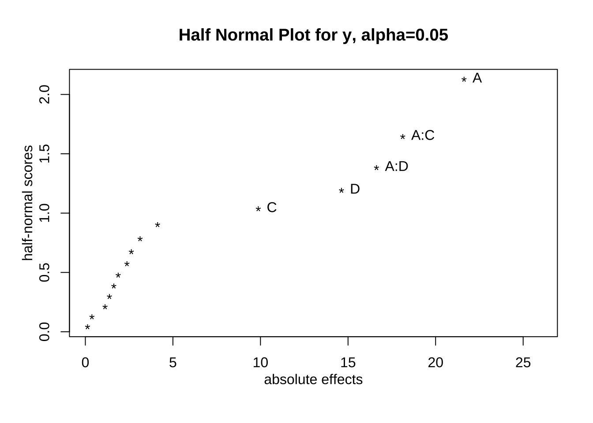
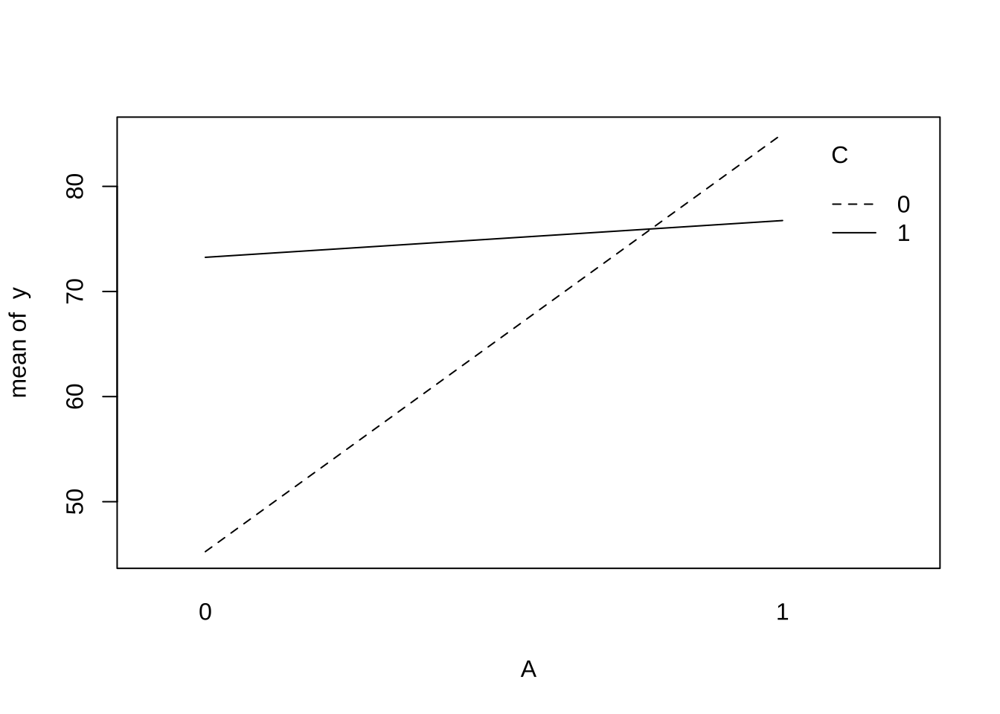
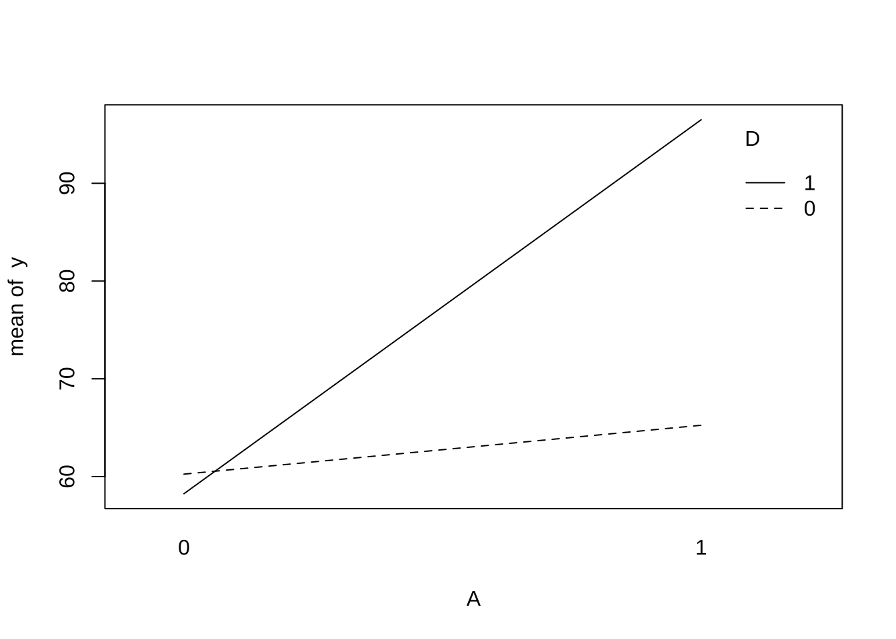

제 1 장 교과서 예제 8.2
반복이 없는 \(2^4\) 요인배치법에서 16회의 실험을 동일한 환경에서 실시할 수 없어서 상호작용효과 \(ACD\) 와 \(BCD\) 를 블럭과 교락시켜서 실험하였다 (교과서 예제 8.2, 230 페이지)
1.1 실험자료의 생성
먼저 16개의 실험 처리 조합을 표준 순서로서 생성하자. default.level=c(0,1) 은 요인의 수준을
0과 1로 표시하는 옵션이다.
X <- FrF2(nruns=16, nfactors=4, randomize = FALSE, default.level=c(0,1))## creating full factorial with 16 runs ...X## A B C D
## 1 0 0 0 0
## 2 1 0 0 0
## 3 0 1 0 0
## 4 1 1 0 0
## 5 0 0 1 0
## 6 1 0 1 0
## 7 0 1 1 0
## 8 1 1 1 0
## 9 0 0 0 1
## 10 1 0 0 1
## 11 0 1 0 1
## 12 1 1 0 1
## 13 0 0 1 1
## 14 1 0 1 1
## 15 0 1 1 1
## 16 1 1 1 1
## class=design, type= full factorial실험의 표준 순서는 다음과 같이 yates() 함수를 이용하여 알 수 있다.
yates(rep(0,16))## A B AB C AC BC ABC D AD BD ABD CD ACD BCD ABCD
## 0 0 0 0 0 0 0 0 0 0 0 0 0 0 0
## attr(,"mean")
##
## 0그리고 처리의 표준 순서로 실험값과 블럭변수를 입력한다. 그리고 처리조합 정보 X 와 결합하여 최종 자료인 df 를 만들자.
그림 1.1: 예제 8.2 자료
y <- c(45,71, 48, 65, 68, 60, 80, 65, 43, 100, 45, 104, 75, 86, 70, 96 )
block <- factor(c(1, 3, 2, 4, 4, 2, 3, 1, 4, 2, 3, 1, 1, 3, 2, 4))
treat <- c("0", names(yates(rep(0,16))))
df0 <- data.frame(block=block, treat=treat, y=y )
df <- cbind(X, df0)df %>% kbl() %>% kable_paper("hover", full_width = F)| A | B | C | D | block | treat | y |
|---|---|---|---|---|---|---|
| 0 | 0 | 0 | 0 | 1 | 0 | 45 |
| 1 | 0 | 0 | 0 | 3 | A | 71 |
| 0 | 1 | 0 | 0 | 2 | B | 48 |
| 1 | 1 | 0 | 0 | 4 | AB | 65 |
| 0 | 0 | 1 | 0 | 4 | C | 68 |
| 1 | 0 | 1 | 0 | 2 | AC | 60 |
| 0 | 1 | 1 | 0 | 3 | BC | 80 |
| 1 | 1 | 1 | 0 | 1 | ABC | 65 |
| 0 | 0 | 0 | 1 | 4 | D | 43 |
| 1 | 0 | 0 | 1 | 2 | AD | 100 |
| 0 | 1 | 0 | 1 | 3 | BD | 45 |
| 1 | 1 | 0 | 1 | 1 | ABD | 104 |
| 0 | 0 | 1 | 1 | 1 | CD | 75 |
| 1 | 0 | 1 | 1 | 3 | ACD | 86 |
| 0 | 1 | 1 | 1 | 2 | BCD | 70 |
| 1 | 1 | 1 | 1 | 4 | ABCD | 96 |
위의 실험 자료를 블럭과 처리 순으로 정렬해 보자.
df %>% arrange( block, treat)## A B C D block treat y
## 1 0 0 0 0 1 0 45
## 2 1 1 1 0 1 ABC 65
## 3 1 1 0 1 1 ABD 104
## 4 0 0 1 1 1 CD 75
## 5 1 0 1 0 2 AC 60
## 6 1 0 0 1 2 AD 100
## 7 0 1 0 0 2 B 48
## 8 0 1 1 1 2 BCD 70
## 9 1 0 0 0 3 A 71
## 10 1 0 1 1 3 ACD 86
## 11 0 1 1 0 3 BC 80
## 12 0 1 0 1 3 BD 45
## 13 1 1 0 0 4 AB 65
## 14 1 1 1 1 4 ABCD 96
## 15 0 0 1 0 4 C 68
## 16 0 0 0 1 4 D 431.2 선형표현식
이제 위에서 생성된 자료에서 상호작용효과 \(ACD\) 와 \(BCD\) 가 블록과 교락되어 있는지 선형표현식을 이용하여 확인해 보자.
\[\begin{align*} L_1 & = x_1 + x_3 + x_4 (\text{mod}2) \\ L_2 & = x_2 + x_3 + x_4 (\text{mod}2) \end{align*}\]
예를 들어 블럭 1 (\(L_1=0, L_2=0\)) 에 베치된 처리에 대하여 선형식의 값을 구해보자.
| 블럭 | 처리 | \(L_1 (ACD)\) | \(L_2 (BCD)\) |
|---|---|---|---|
| 1 | \((0)\) | \(\texttt{MOD} (0+0+0, 2) = 0\) | \(\texttt{MOD} (0+0+0, 2) = 0\) |
| 1 | \(ABC\) | \(\texttt{MOD} (1+1+0, 2) = 0\) | \(\texttt{MOD} (1+1+0, 2) = 0\) |
| 1 | \(ABD\) | \(\texttt{MOD} (1+0+1, 2) = 0\) | \(\texttt{MOD} (1+0+1, 2) = 0\) |
| 1 | \(CD\) | \(\texttt{MOD} (0+1+1, 2) = 0\) | \(\texttt{MOD} (0+1+1, 2) = 0\) |
예를 들어 블럭 2 (\(L_1=0, L_2=1\)) 에 베치된 처리에 대하여 선형식의 값을 구해보자.
| 블럭 | 처리 | \(L_1 (ACD)\) | \(L_2 (BCD)\) |
|---|---|---|---|
| 2 | \(AC\) | \(\texttt{MOD} (1+1+0, 2) = 0\) | \(\texttt{MOD} (0+1+0, 2) = 1\) |
| 2 | \(AD\) | \(\texttt{MOD} (1+0+1, 2) = 0\) | \(\texttt{MOD} (0+0+1, 2) = 1\) |
| 2 | \(B\) | \(\texttt{MOD} (0+0+0, 2) = 0\) | \(\texttt{MOD} (1+0+0, 2) = 1\) |
| 2 | \(BCD\) | \(\texttt{MOD} (0+1+1, 2) = 0\) | \(\texttt{MOD} (1+1+1, 2) = 1\) |
이렇게 모든 처리에 대하여 구한 선형식의 값은 다음과 같이 함수 conf.design() 로 구할 수 있다.
아래 주어진 블럭배치의 결과는 자료 df 에서 처리들이 블럭에 배치된 것과 일치함을 확인할 수 있다.
Def.contrast <- matrix(c(1,0,1,1, 0,1,1,1), 2,4, byrow=TRUE)
conf.design(G=Def.contrast , p=2, block.name = "블럭", treatment.names=c("A", "B", "C", "D"))## 블럭 A B C D
## 1 00 0 0 0 0
## 2 00 1 1 1 0
## 3 00 1 1 0 1
## 4 00 0 0 1 1
## 5 01 0 1 0 0
## 6 01 1 0 1 0
## 7 01 1 0 0 1
## 8 01 0 1 1 1
## 9 10 1 0 0 0
## 10 10 0 1 1 0
## 11 10 0 1 0 1
## 12 10 1 0 1 1
## 13 11 1 1 0 0
## 14 11 0 0 1 0
## 15 11 0 0 0 1
## 16 11 1 1 1 11.3 결합요인
상호작용효과 \(ACD\) 와 \(BCD\) 가 블록과 교락되어 있을 경우 발생하는 결합요인은 \(AB\) 이다. 따라서 상호작용효과 \(AD\) 도 블록 효과와 교락된다.
\[ACD \times BCD = ABC^2 D^2= AB\]
1.4 Yates 계산법
이제 자료 df 에 함수 yates() 를 다음과 같이 적용하여 각 효과의 추정치(effect)를 게산해 보자.
참고로 attr(a, "mean") 는 Yates 추정치가 저장된 a 에서 반응값의 전체 평균 \(\bar y_{....}\) 을 구하는 함수이다.
a <- yates(df$y, c("A", "B", "C", "D"))
a## A B AB C AC BC ABC D AD BD
## 21.625 3.125 0.125 9.875 -18.125 2.375 1.875 14.625 16.625 -0.375
## ABD CD ACD BCD ABCD
## 4.125 -1.125 -1.625 -2.625 1.375
## attr(,"mean")
##
## 70.0625attr(a, "mean")##
## 70.0625이제 위의 결과를 이용하여 교과서 표 8.4 와 동일한 Yates 계산의 결과를 구해보자.
yates_effect <- data.frame(treat = names(a), effect= a)
yates_effect## treat effect
## A A 21.625
## B B 3.125
## AB AB 0.125
## C C 9.875
## AC AC -18.125
## BC BC 2.375
## ABC ABC 1.875
## D D 14.625
## AD AD 16.625
## BD BD -0.375
## ABD ABD 4.125
## CD CD -1.125
## ACD ACD -1.625
## BCD BCD -2.625
## ABCD ABCD 1.375totalmean <- data.frame(treat="(0)", effect = attr(a, "mean"))
totalmean ## treat effect
## 1 (0) 70.0625yates_effect <- rbind(totalmean, yates_effect)
yates_effect## treat effect
## 1 (0) 70.0625
## A A 21.6250
## B B 3.1250
## AB AB 0.1250
## C C 9.8750
## AC AC -18.1250
## BC BC 2.3750
## ABC ABC 1.8750
## D D 14.6250
## AD AD 16.6250
## BD BD -0.3750
## ABD ABD 4.1250
## CD CD -1.1250
## ACD ACD -1.6250
## BCD BCD -2.6250
## ABCD ABCD 1.3750위에서 구한 데이터프레임의 effect 는 평균 효과를 의미한다. 예를 들어서 처리 \(A\) 에 대한 효과는 다음과 같이
구한다.
\[\begin{align*} A & = \frac{1}{8} (a + ab + ac + abc + ad + abd + acd + abcd - (0) - b -c -bc -d - bd - cd -bcd) \\ & =\frac{1}{8} (T_{1...} - T_{0...}) \\ & = \bar {y}_{1...} - \bar {y}_{0...} \\ & = 21.625 \end{align*}\]
따라서 제곱합을 구하는 방법은 처리합의 차를 제곱한 값 \((T_{1...} - T_{0...})^2\) 을 총 실험의 크기 \(n=16\) 으로 나눈다. 이는 평균처리 효과를 제곱한 값에 4를 곱해주는 양과 같다.
\[ SS_A = \frac{(T_{1...} - T_{0...})^2}{16} = 4 (\bar {y}_{1...} - \bar {y}_{0...})^2 \]
이제 위에서 구한 평균 처리 효과를 이용하여 제곱합을 구해보자. 주의할 점은 평균 처리 효과가 저장된 yates_effect 의 첫 행은 전체평균 \(\bar y_{....} = T_{....}/16\) 이 저장되어 있기 때문에 4를 한번 더 곱해주어야 한다.
\[ CT = \frac{T_{....}^2}{16} = 16 (\bar y_{....})^2\]
yates_effect$SS <- 4*yates_effect$effect^2
yates_effect$SS[1] <- yates_effect$SS[1] *4
yates_effect## treat effect SS
## 1 (0) 70.0625 78540.0625
## A A 21.6250 1870.5625
## B B 3.1250 39.0625
## AB AB 0.1250 0.0625
## C C 9.8750 390.0625
## AC AC -18.1250 1314.0625
## BC BC 2.3750 22.5625
## ABC ABC 1.8750 14.0625
## D D 14.6250 855.5625
## AD AD 16.6250 1105.5625
## BD BD -0.3750 0.5625
## ABD ABD 4.1250 68.0625
## CD CD -1.1250 5.0625
## ACD ACD -1.6250 10.5625
## BCD BCD -2.6250 27.5625
## ABCD ABCD 1.3750 7.5625그림 1.2: 예제 8.2 Yates 계산
1.5 블럭변동
자료에서 블럭의 변동을 구하는 방법은 교과서 231 에 나온 것처럼 각 블럭에 대한 관측값의 합을 구해서 변동의 공식을 이용할 수 있다. 각 블럭 안의 관측값들 합을 \(T_i\)라고 하면
\[ SS_{block} = \frac{1}{4} \sum_{i=1}^4 T^2_i - CT \quad \text{where } CT=\frac {T^2}{(4)(4)} \]
그림 1.3: 예제 8.2 블럭 제곱합
또한 다음과 같은 선형식을 R 록 적합식키고 분산분석을 이용하여 블럭의 변동(\(SS_{block}\))을 구할 수 있다. 아래 함수
anova() 결과에 의하면 \(SS_{block} = 38.19\) 이다.
\[ y_{ij} = \mu + \text{(block)}_i + e_{ij} \]
res_block <- lm(y~block, data=df)
anova(res_block)## Analysis of Variance Table
##
## Response: y
## Df Sum Sq Mean Sq F value Pr(>F)
## block 3 38.19 12.729 0.02683 0.99375
## Residuals 12 5692.75 474.396블럭의 변동은 상호작용 효과 \(ACD\), \(BCD\), \(AB\) 에 대한 제곱합들의 합과 같다.
\[ SS_{block} = SS_{ACD} + SS_{BCD} + SS_{AB} = 10.5625 + 27.5625 +0.0625 = 38.19 \]
yates_effect %>% filter(treat == "ACD" | treat == "BCD" | treat == "AB")## treat effect SS
## AB AB 0.125 0.0625
## ACD ACD -1.625 10.5625
## BCD BCD -2.625 27.56251.6 핵심요인의 선별
핵심요인의 선별하기 위하여 먼저 각 처리의 제곱합을 순서대로 나열해 보자. 주요인 \(A\), \(C\), \(D\) 와 상호작용 효과 \(AC\) 와 \(AD\)의 제곱합이 다른 것보다 크게 나타나는 것을 볼 수 있다.
yates_effect %>% arrange(desc(SS))## treat effect SS
## 1 (0) 70.0625 78540.0625
## A A 21.6250 1870.5625
## AC AC -18.1250 1314.0625
## AD AD 16.6250 1105.5625
## D D 14.6250 855.5625
## C C 9.8750 390.0625
## ABD ABD 4.1250 68.0625
## B B 3.1250 39.0625
## BCD BCD -2.6250 27.5625
## BC BC 2.3750 22.5625
## ABC ABC 1.8750 14.0625
## ACD ACD -1.6250 10.5625
## ABCD ABCD 1.3750 7.5625
## CD CD -1.1250 5.0625
## BD BD -0.3750 0.5625
## AB AB 0.1250 0.0625이제 모든 효과가 포함된 완전모형(full model)을 적합시키고 반정규확률 그림을 그려서 핵심효인을 다시 찾아보자. 제곱합을 비교할 때와 같이 주요인 \(A\), \(C\), \(D\) 와 상호작용 효과 \(AC\) 와 \(AD\)이 핵심 요인으로 보여진다.
fullmodel <- lm (y~ A*B*C*D, data=df)
DanielPlot(fullmodel, half=TRUE)
1.7 최종 모형
위의 핵심요인의 선별 결과를 고려하여 주요인 \(A\), \(B\), \(C\), \(D\) 와 상호작용 효과 \(AC\) 와 \(AD\) 를 포함하는 축소된 모형을 최종모형으로 적합해 보자. 축소모형에는 당연히 블럭효과도 포함해야 한다. 또한 오차항에는 블럭과 교럭돤 상호작용 효과들과 축소모형에 포함된 효과들을 제외한 다른 효과들이 풀링된다.
\[ SS_E = SS_{B \times C} + SS_{B \times D} + SS_{C \times D} + SS_{A \times B \times C} + SS_{A \times B \times D } + SS_{A \times B \times C \times D}\]
finalmodel <- lm(y ~ block + A +B + C+ D + A:C + A:D, data=df)
anova(finalmodel)## Analysis of Variance Table
##
## Response: y
## Df Sum Sq Mean Sq F value Pr(>F)
## block 3 38.187 12.729 0.64793 0.61234985
## A 1 1870.562 1870.562 95.21421 6.6601e-05 ***
## B 1 39.062 39.062 1.98834 0.20818928
## C 1 390.063 390.063 19.85472 0.00430203 **
## D 1 855.563 855.563 43.54931 0.00058207 ***
## A:C 1 1314.062 1314.062 66.88759 0.00017998 ***
## A:D 1 1105.562 1105.562 56.27466 0.00029022 ***
## Residuals 6 117.875 19.646
## ---
## Signif. codes: 0 '***' 0.001 '**' 0.01 '*' 0.05 '.' 0.1 ' ' 11.8 상호작용 그림
with(df, interaction.plot(x.factor = A, trace.factor = C, response = y))
with(df, interaction.plot(x.factor = A, trace.factor = D, response = y))